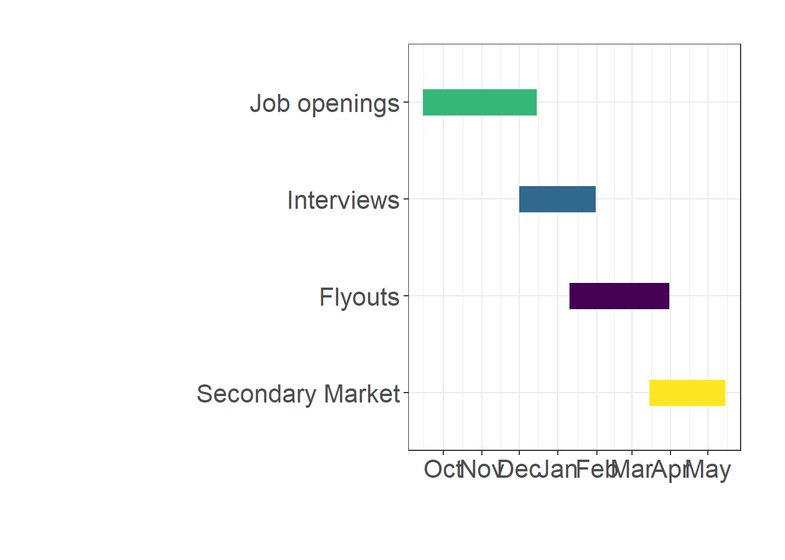

Non-academic research (think tanks, IOs, central banks)
Academic research
So What is This Job Market?
Standardized hiring system, coordinated around:
Timing
Applications
Staging
The Job Market Timeline
#load ggplot2 and ggthemes librarieslibrary(ggplot2)
Warning: package 'ggplot2' was built under R version 4.5.2
library(ggthemes)
Warning: package 'ggthemes' was built under R version 4.5.2
# Force English month names regardless of system localeinvisible(Sys.setlocale("LC_TIME", "C"))#create data frame with generic dates (year is arbitrary, only months matter)data <-read.csv(text="event,start,end Job openings, 2025-09-15,2025-12-15 Interviews, 2025-12-01,2026-01-31 Flyouts, 2026-01-10,2026-03-31 Secondary Market,2026-03-15,2026-05-15")# Convert the start and end columns to Date objectsdata$start <-as.Date(data$start)data$end <-as.Date(data$end)#create gantt chart that visualizes start and end time for each eventggplot(data, aes(x=start, xend=end, y=reorder(event, difftime(data$start[1], start)), yend=reorder(event, difftime(data$start[1], start)), color=event)) +theme_bw()+#use ggplot theme with black gridlines and white backgroundgeom_segment(size=8) +#increase line width of segments in the chartscale_color_viridis_d() +#use the viridis color schemescale_x_date(date_breaks ="1 month", date_labels ="%b") +#month names onlytheme(axis.title =element_text(), #adjust axis title fontlegend.position ="none", #suppress the legendtext =element_text(size =20), #increase font sizeplot.margin =margin(1, 1, 1, 1, "cm")) +#adjust plot marginsxlab("") +#suppress the x-axis labelylab("") #suppress the y-axis label
Warning: Using `size` aesthetic for lines was deprecated in ggplot2 3.4.0.
ℹ Please use `linewidth` instead.
Warning: Use of `data$start` is discouraged.
ℹ Use `start` instead.
Use of `data$start` is discouraged.
ℹ Use `start` instead.

I want to go on the market, now what?
By end of September:
Have Job Market Paper ready;
Personal website up and running (GitHub Pages, Quarto, Hugo);